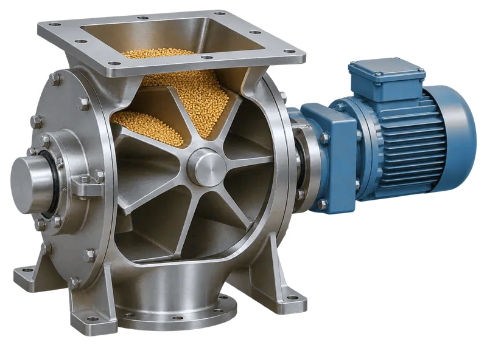
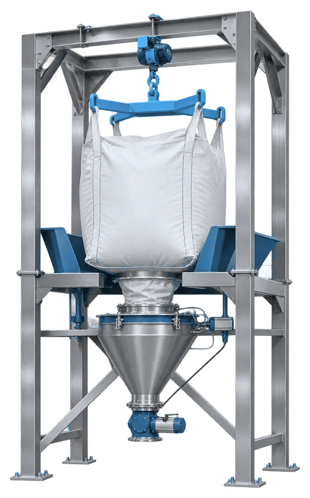

Single cyclone
- Feature
- One separation chamber.
- Suits
- Product recovery or pre-separation from process air.







Components · 02 / 08
From product recovery to pre-separation. Find a version that suits your material, air flow and the place in your process.

See the main feature of each version and where it fits. Choose your application: what fits stays in view.

Use these starting points to prepare a choice. We assess them together, including the connection to the rest of your installation.

Follow the air and the product from inlet to outlet.
View the interactive cross-sectionA single cyclone has one separation chamber. A multicyclone divides the air flow over several smaller cyclones. Which layout fits depends on the air flow, the particle size distribution, the permissible pressure drop and the installation space. We compare these starting points before we recommend a version.
Cyclones are used in industrial dust extraction, product recovery and the separation of solids from conveying air. Think of powders, granules, fibres or chips. We assess whether cyclone technology is suitable on the basis of the material and the required separation.
A cyclone separates particles through the motion of the air flow, without a filter medium. A filter captures particles with, for example, a filter cartridge or filter cloth. For finer particles, additional filtration may be needed. A cyclone can then limit the dust load on the filter as a pre-separator.
For an existing installation, we assess the connection dimensions, available height, air balance and product discharge. The capacity of the existing fan or blower and the space for inspection are also important. This makes clear which changes are needed for a proper integration.
Preferably share the product type, particle size, air flow, the quantity of entrained material and the process temperature. Also state the operating pressure, required separation and available space. An installation drawing or photo helps to assess the connections. We discuss missing data during the analysis.
The costs depend on the dimensions, choice of material, version and required parts around the cyclone. Pipework, product discharge, any downstream filtration and installation also determine the scope of the project. For a targeted quotation, we first map out your process data and the scope of supply.
Contact
Share your material, air flow and required separation. We think along about the version and the connection to your installation.
Useful to mention